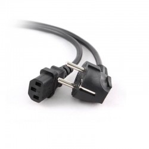
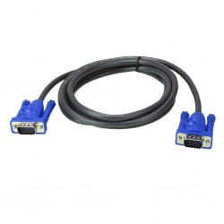
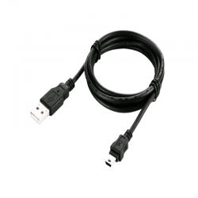
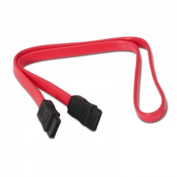
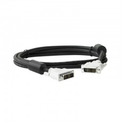
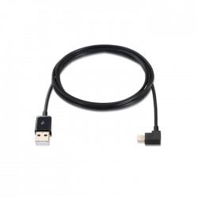
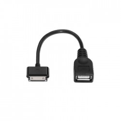

Cable Lighting acodado a usb 2.0, lightning/m-usb a/m, blanco, 2.0 m
Cable Lighting acodado a usb 2.0, lightning/m-usb a/m, blanco, 2.0 m |
||||||||
|
||||||||
| Inicio | Ordenadores | Cableado/Redes | Software | Contacto | ||||
| Cable de alimentacion Ordenador, Monitor, Impresora etc... |  Equip Cable VGA con ferrita Macho/Macho - Cable VGA |  Cable Electrico USB para Mindstorms | ||||||
| CABLE SATA DATOS, 0.5 M |  Cable DVI-D Macho a DVI-D Macho 1,5m AWM E204139 Style 20276 | Cable Lighting acodado a usb 2.0, lightning/m-usb a/m, blanco, 2.0 m |
||||||
|  Cable lightning acodado a usb 2.0, lightning/m-usb a/m, negro, 2.0 m |  Cable usb 2.0 otg para Samsung, 30p/m-a/h, negro, 15 cm | |||||||
| © 2º DAW Colegio Montessori - Zaragoza | Informática Pepe | Ordenadores, Cableado/Redes, Software, ... | ||||||